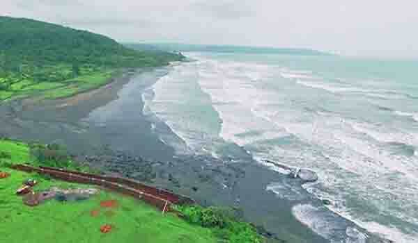

A wide range of beautiful and serene beaches is what makes the twin villages of Harnai and Murud in the Dapoli taluka of Ratnagiri district such a big favourite of tourists all year round. Also, not only have they been blessed with natural attractions but they also occupy a significant place in the history of the state.The white silky seashore at Harnai-Murud is adorned with a chain of sea forts such as Suvarnadurg, Kanakdurg and Goa.
Harnai is an ancient port on the west coast of India. Though the village is very small, a visit to the sea fort Suvarnadurg makes for an amazing experience. The popular beaches of Harnai and Murud earn most of the plaudits for the sea forts that gracefully encircling them. The historical sea-fort of Suvarnadurg with all its remnants of history awaits your visit and the experience one attains upon its sojourn is unparallel.Positioned on the littoral of the mighty Arabian sea, the other two forts of Goa and Kanakadurga are of equal importance like Suvarnadurg and deserves all your awe.
Graced with the local godhead, the quaint village of Murud is stationed some 14 kilometers from the place of dapoli. Visiting time-honored village of Murud is indisputably one of the things to do besides the boat ride to the fort of Suvarnadurg, unravelling venturesome hikes into the nearby forests and witnessing dolphins.
Murud Harnai is a set of many beaches such as Murud, Harnai, Karde, Anjarle cobbled into a destination. It’s best to explore Anjarle in the morning, enjoy a swim at Murud, and then head to Harnai for a fish auction in the evening. To experience a lovely sunset, you can also drive out to Karde.